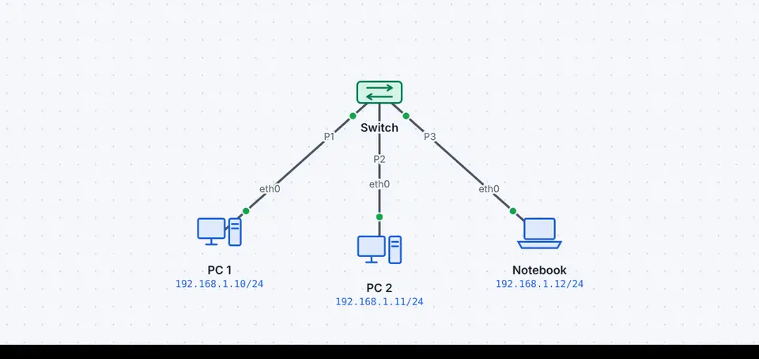
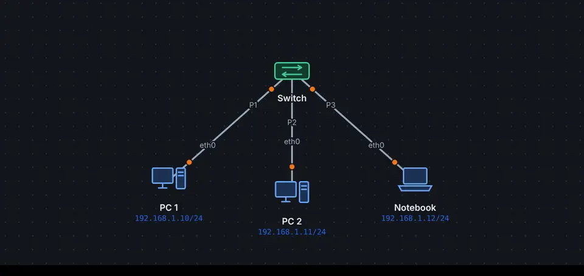

What for
A frame in the local network needs a destination MAC address, but a program only knows the IP address. The Address Resolution Protocol (ARP) links the two: “Who has 192.168.1.11? Tell 192.168.1.10.”
Sequence
- PC 1 wants to send to 192.168.1.11 and looks into its ARP cache. Empty.
- It sends an ARP request as a broadcast (
ff:ff:ff:ff:ff:ff). The switch distributes it to all ports. - Only PC 2 recognises its address and replies as unicast with its MAC.
- PC 1 stores the mapping in the cache and now sends the actual packet.


If the destination is in another network, the PC does not ask for the destination but for the MAC of its default gateway (How routing works).
| Field | Request | Reply |
|---|---|---|
| Operation | 1 (request) | 2 (reply) |
| Sender MAC / IP | PC 1 | PC 2 |
| Target MAC | 00:00:00:00:00:00 (unknown) | PC 1 |
| Target IP | 192.168.1.11 | 192.168.1.10 |
The EtherType of ARP is 0x0806.
The whole structure according to RFC 826, with the values of an ARP request from the simulation. The message is only 28 bytes long, so Ethernet pads it to 46 bytes.
| Field | Length | Example value | Meaning |
|---|---|---|---|
| Hardware type | 16 bits (2 bytes) | 1 | 1 = Ethernet. |
| Protocol type | 16 bits (2 bytes) | 0x0800 | Protocol address being resolved, 0x0800 = IPv4. |
| HW length | 8 bits | 6 | Length of a MAC address: 6. |
| Protocol length | 8 bits | 4 | Length of an IPv4 address: 4. |
| Operation | 16 bits (2 bytes) | 1 | 1 = request (who has …?), 2 = reply. |
| Sender MAC | 48 bits (6 bytes) | 02:00:00:00:02:00 | MAC address of the sender. |
| Sender IP | 32 bits (4 bytes) | 192.168.1.10 | Its IPv4 address. |
| Target MAC | 48 bits (6 bytes) | 00:00:00:00:00:00 | MAC address being looked for; still 00:00:00:00:00:00 in the request. |
| Target IP | 32 bits (4 bytes) | 192.168.1.11 | The IPv4 address whose MAC address is wanted. |
Special forms
- Gratuitous ARP: a device announces its own address, e.g. after starting or when roaming on Wi-Fi. If someone answers, the address is assigned twice.
- Proxy ARP: a router answers on behalf of an address that lies behind it, e.g. with static NAT.
Try it in leyoNET
C:\> arp -a
C:\> ping 192.168.1.11
C:\> arp -a
C:\> arp -dIn the packet list with the filter arp, request and reply appear; the detail view shows all fields and their bytes.
See an example
- ARP and ping in the LAN
Three computers on a switch, all in 192.168.1.0/24.
PC 1 asks for PC 2's MAC with an ARP broadcast, then four ICMP echoes follow. The switch learns its MAC table.
“Watch live” opens the network in leyoNET, the simulation runs in a loop. In the app you find it under File → Demo networks, with a step-by-step tour.
Practise
- ★☆☆☆☆ Capture packets · 2 goals · Worksheet (German)
- ★★★★☆ Protocol analysis – Task 3: ARP, DNS and HTTP · 7 goals · Worksheet (German)
- ★★★☆☆ UE05 VLAN theory check: who receives the broadcast? · 3 goals · Worksheet (German)
In leyoNET under Tools → Exercise catalogue. Every exercise checks itself.
What leyoNET simplifies
| Protocol | Layer | Simplification in the simulation |
|---|---|---|
| ARP, gratuitous ARP, proxy ARP | 2 | none |